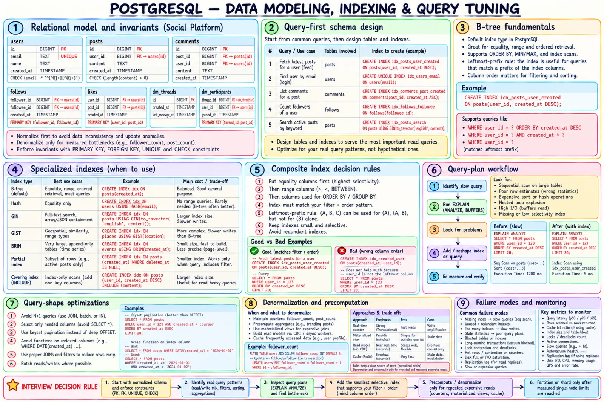

Topic · PostgreSQL
PostgreSQL Data Modeling and Indexing
Model entities and invariants first, index from real queries, read the plan, and precompute only proven hot reads.


Quick Revision
- Normalize first; constraints are the correctness boundary.
- Composite index: equality → range → order; leftmost prefix matters.
- An index doesn't guarantee an index scan - read the plan.
- No N+1, no
SELECT *, keyset not deepOFFSET. - Derived counters and views are rebuildable copies, not the truth.
Schema and invariants
users(id PK, email UNIQUE NOT NULL, name, created_at TIMESTAMPTZ)
posts(id PK, user_id FK→users, body CHECK(length>0), created_at)
comments(id PK, post_id FK→posts, user_id FK→users, body, created_at)
follows(follower_id, followee_id, PK(both), CHECK(follower_id <> followee_id))
likes(user_id, target_type CHECK IN('post','comment'), target_id, PK(all three))
dm_threads(id PK) · dm_participants(thread_id, user_id, PK(both))
- Normalize to avoid duplicated truth; denormalize only proven hot reads.
- Express invariants as constraints whenever the DB can.
- One authoritative value - cached counters are derived.
TIMESTAMPTZfor real instants; surrogate IDs when natural keys are big/mutable/sensitive, but keep natural uniqueness.
Query-first indexes
-- recent posts for a user WHERE user_id = $1 ORDER BY created_at DESC LIMIT 20 CREATE INDEX idx_posts_user_created ON posts(user_id, created_at DESC); -- login lookup CREATE UNIQUE INDEX idx_users_email ON users(email); -- comments on a post CREATE INDEX idx_comments_post_created ON comments(post_id, created_at ASC);
user_id narrows by equality, created_at is pre-sorted inside it, so PostgreSQL stops after 20 entries.
- Equality first, then range, then order/group columns.
(a, b, c)servesa,(a, b),(a, b, c)- usually notbalone.- Don't stack overlapping indexes without measuring write and storage cost.
| Type | Best fit | Caveat |
|---|---|---|
| B-tree | Equality, range, order, MIN/MAX | Default; weak for containment/text |
| Hash | Equality only | B-tree usually more versatile |
| GIN | Arrays, JSONB containment, full-text | Large, costly writes |
| GiST | Geo, ranges, nearest-neighbor | Operator-class specific |
| SP-GiST | Tries, quadtrees | Specialized |
| BRIN | Huge tables ordered on disk (time) | Useless for random data |
| Partial | Hot subset (active rows) | Query must imply predicate |
Covering (INCLUDE) | Skip heap fetch | Bigger, more write work |
CREATE INDEX ON posts(created_at DESC) WHERE deleted_at IS NULL;
CREATE INDEX ON posts USING GIN (to_tsvector('english', body));
CREATE INDEX ON events USING BRIN (created_at);
CREATE INDEX ON posts(user_id, created_at DESC) INCLUDE (body);
Query-plan workflow
- Find the slow endpoint and its exact SQL.
- Capture latency, rows returned/scanned, CPU, I/O, concurrency.
EXPLAIN, thenEXPLAIN (ANALYZE, BUFFERS)safely.- Look for big seq scans, estimate/actual mismatch, nested loops on large inputs, costly sorts/hashes, heap fetches, per-row queries, disk reads.
- Change one thing: query, index, stats, schema, or precompute.
- Re-measure the whole endpoint.
- N+1 → join, batch,
WHERE id = ANY($1). - Only needed columns; no functions on indexed columns when a range works.
- Filter early; short transactions; prepared statements and batching.
WHERE user_id = $1 AND (created_at, id) < ($2, $3) ORDER BY created_at DESC, id DESC LIMIT 20; -- keyset pagination
Denormalization and read models
For measured join/aggregate bottlenecks with a defined freshness contract: follower_count, post_count, leaderboards, materialized reports, CDC/outbox read models.
| Update via | Freshness | Strength | Cost |
|---|---|---|---|
| Same transaction | Immediate | Correct | More write work, longer locks |
| Trigger | Immediate | Centralized | Hidden coupling |
| Outbox + worker | Near real time | Reliable events | Eventual, more machinery |
| Scheduled refresh | Minutes-hours | Simple | Stale between runs |
| Recompute on read + cache | Seconds-minutes | Flexible | Invalidation, stampede |
Trade-offs
| Choice | Benefit | Cost |
|---|---|---|
| Normalize | One truth, no anomalies | More joins |
| Denormalize | Fast hot reads | Duplication, sync machinery |
| B-tree | Versatile | Write/storage overhead |
| GIN | Containment, full-text | Large, costly updates |
| BRIN | Tiny for correlated data | Low precision |
| Composite | Serves filter + order | Order matters, narrow reuse |
| Covering | Fewer heap fetches | Bigger, more writes |
| Trigger-derived data | Immediate | Hard to evolve |
Failure modes
- Missing index - full scan on growing table → selective index, verify plan.
- Too many indexes - costly writes, WAL, vacuum → drop unused/overlapping.
- Wrong composite order - can't serve filter + sort → follow the predicate.
- Stale statistics - bad estimates →
ANALYZE, tune thresholds. - N+1 - hundreds of round trips → join, batch, prefetch.
- Deep
OFFSET- scans and discards rows → keyset. - Function on indexed column - rewrite as range or justified expression index.
- Unbounded query - memory/temp spikes → limits, timeouts, pagination.
Interview practice
Answer aloud, then reveal.
Why not index every column?
Each index costs disk, memory, WAL, maintenance, and write I/O. Index only valuable query patterns.
Index a user's recent posts query?
(user_id, created_at DESC), often plus id as tie-breaker. Validate with the plan.
When is a sequential scan correct?
Small table or a large fraction of rows - sequential pages beat random index lookups plus heap fetches.
Why can an index-only scan still hit the heap?
Visibility must be checked unless the visibility map marks the page all-visible - vacuum health matters.
When add a search engine?
Start with GIN full-text; move to Elasticsearch/OpenSearch via CDC/outbox for relevance, analyzers, facets, scale. PG stays authoritative.